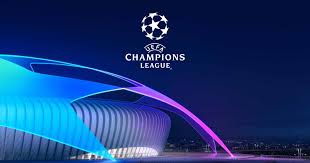
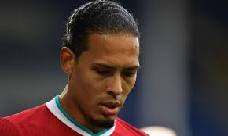

Lionel Messi's contract buyout clause
(or release clause) is €700 million
(£630m/$825m). The hefty clause
was put in place when Messi signed
a new four-year contract with
Barcelona in 2017. That deal expires
in 2021.Cristiano Ronaldo has tested positive again
for coronavirusThis season's Champions
League final is scheduled
to be played on Saturday
May 29 2021 at the
Ataturk Olympic Stadium
in Istanbul, Turkey.
The UEFA Champions League is an annual club football competition
organised by the Union of European Football Associations and contested
by top-division European clubs, deciding the competition winners
through a group and knockout format.
UEFA Champions League group
stage. Group A:Bayern, Atlético
Madrid, Salzburg, Lokomotiv
Moskva. Group B: Real Madrid,
Shakhtar Donetsk,Internazionale,
Mönchengladbach. Group C: Porto,
Manchester City, Olympiacos,
Marseille. Group D:Liverpool, Ajax,
Atalanta, Midtjylland.
Duván Zapata scored
twice in Atalanta's 2-2
draw with Ajax on
Matchday 2 to move
top of the UEFA Champ
ions League scoring
charts with three goals.
This season's Champions
League final is scheduled
to be played on Saturday
May 29 2021 at the
Ataturk Olympic Stadium
in Istanbul, Turkey.
Juventus-Barcelona: Cristiano Ronaldo
won't play Champions League match vs.
Messi's Barca after COVID-19 test. ...
Juve manager Andrea Pirlo spoke to the
media on Tuesday and said that the club
was awaiting results of his latest test.
"We must wait for the outcome
[of Ronaldo's test]. I think the result
will come tonight.
Liverpool are facing up to the remainder
of the season without their defensive
talisman, who has been a cornerstone of
their success since his £75million arrival
from Southampton